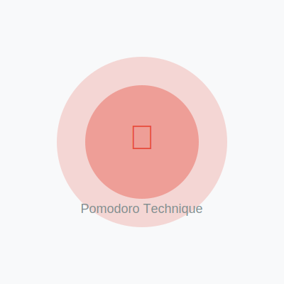

About the Pomodoro Technique
What is the Pomodoro Technique?
The Pomodoro Technique is a time management method developed by Francesco Cirillo in the late 1980s. The technique uses a timer to break work into intervals, traditionally 25 minutes in length, separated by short breaks.
How Does It Work?
- Choose a task - Select a task you want to work on
- Set the timer - Set the timer for 25 minutes (one Pomodoro)
- Work on the task - Focus solely on the task until the timer rings
- Take a short break - Take a 5-minute break
- Repeat - After four Pomodoros, take a longer 15-30 minute break
Benefits
- Improved focus and concentration
- Reduced mental fatigue
- Better time management
- Increased productivity
- Reduced burnout
About This App
This web-based Pomodoro timer helps you implement the Pomodoro Technique right in your browser. It stays in your browser tab, making it easy to stay focused and productive throughout your workday.
